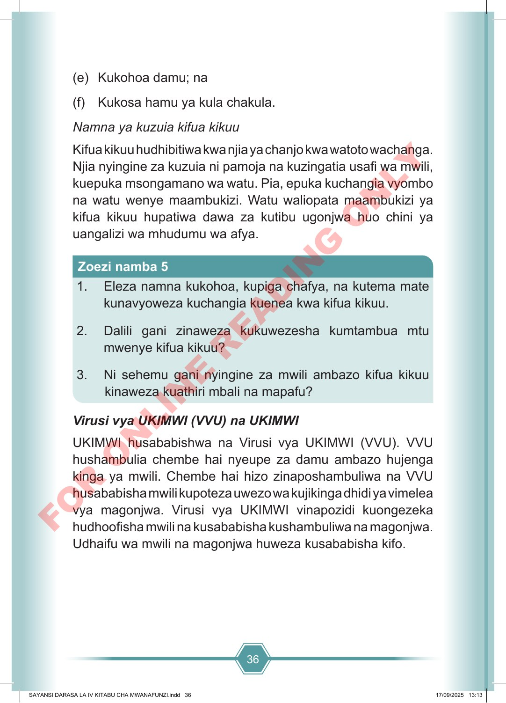

36 (e) Kukohoa damu; na (f) Kukosa hamu ya kula chakula. Namna ya kuzuia kifua kikuu Kifua kikuu hudhibitiwa kwa njia ya chanjo kwa watoto wachanga. Njia nyingine za kuzuia ni pamoja na kuzingatia usafi wa mwili, kuepuka msongamano wa watu. Pia, epuka kuchangia vyombo na watu wenye maambukizi. Watu waliopata maambukizi ya kifua kikuu hupatiwa dawa za kutibu ugonjwa huo chini ya uangalizi wa mhudumu wa afya. 1. Eleza namna kukohoa, kupiga chafya, na kutema mate kunavyoweza kuchangia kuenea kwa kifua kikuu. 2. Dalili gani zinaweza kukuwezesha kumtambua mtu mwenye kifua kikuu? 3. Ni sehemu gani nyingine za mwili ambazo kifua kikuu kinaweza kuathiri mbali na mapafu? Zoezi namba 5 Virusi vya UKIMWI (VVU) na UKIMWI UKIMWI husababishwa na Virusi vya UKIMWI (VVU). VVU hushambulia chembe hai nyeupe za damu ambazo hujenga kinga ya mwili. Chembe hai hizo zinaposhambuliwa na VVU husababisha mwili kupoteza uwezo wa kujikinga dhidi ya vimelea vya magonjwa. Virusi vya UKIMWI vinapozidi kuongezeka hudhoofisha mwili na kusababisha kushambuliwa na magonjwa. Udhaifu wa mwili na magonjwa huweza kusababisha kifo. SAYANSI DARASA LA IV KITABU CHA MWANAFUNZI.indd 36 SAYANSI DARASA LA IV KITABU CHA MWANAFUNZI.indd 36 17/09/2025 13:13 17/09/2025 13:13 F O R O N L I N E R E A D I N G O N L Y